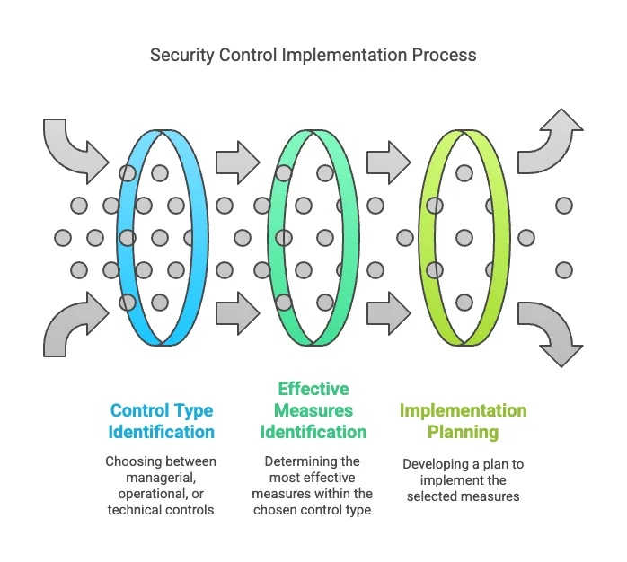
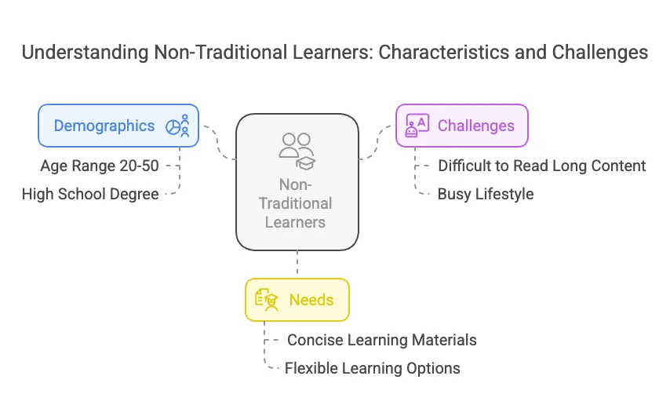
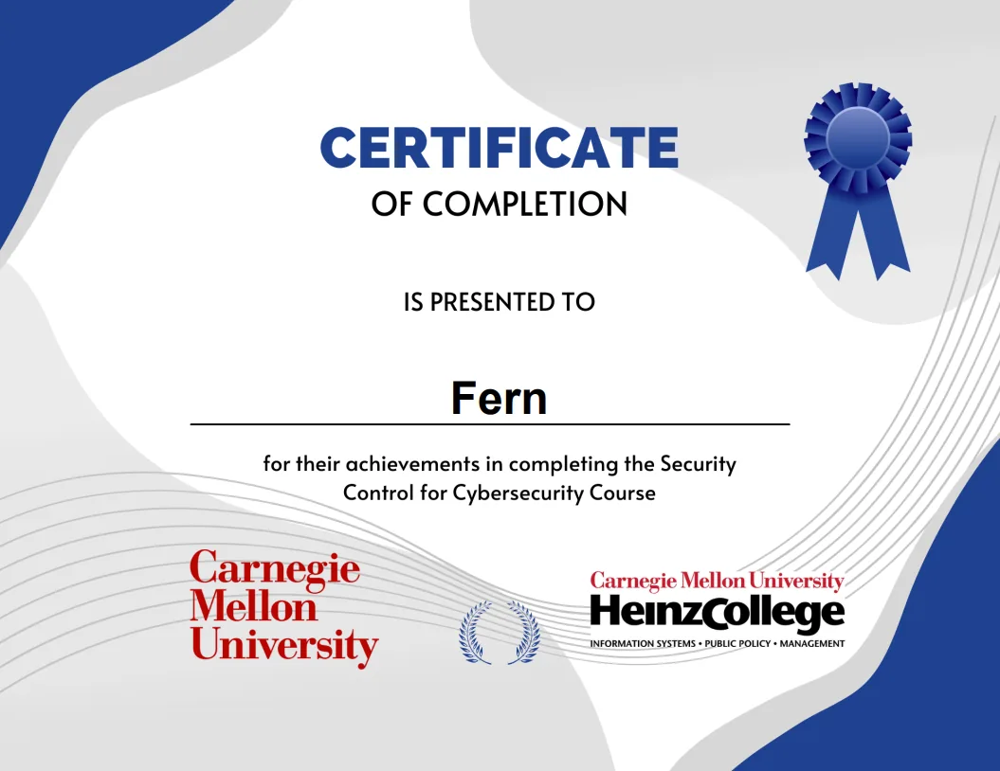
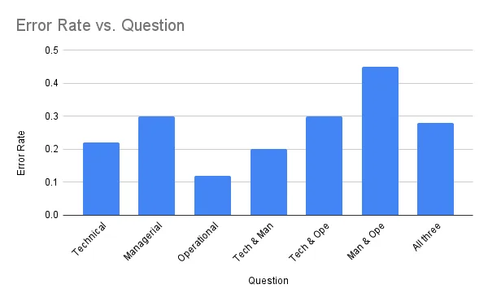

A gamified learning experience for cybersecurity training
Overview
Our client was a local community college in Pittsburgh, whose emphasis was workforce training and readiness. The target learners were facing the challenge of implementing security control actions into different emergent scenarios.
I was the project manager and learning experience designer. The project was handed to me when it was half-developed. However, we received pushback when presenting this idea to our client.
My responsibility was to quickly identify alternative pathways, lead the learning experience process to deliver results timely, and update the team's workflow to prevent similar issues from happening in the future.
Goal
The project goal was to improve learners' performance in implementing security control measurements in different scenarios, increasing their report accuracy rate by 30%.
Try out the course here!
Link: https://storage.googleapis.com/fern_elearing_portfolio/Cyber%20Security%20Control%20Course%20-%20Storyline%20output/story.html
Security Control Course
Role
Project Manager
Learning Experience Designer
Tools
Figma, Articulate Storyline
Team
1 LX Designer, 1 SME
Timeline
Oct - Dec 2024
- 1Project Challenge
- 2Needs Analysis
- 3Project Management
- 4Interactive Learning Design
- 5Implementation and Evaluation
- 6Learning and Next Steps
Project Challenge
This project started development before I joined the team. The original project was a simulation where learners needed to implement regulatory policies and frameworks for security control.
My first meeting was to present the project prototype to the client. However, the client turned down the idea because the prototype was too difficult for the target learners.
As the project manager and learning experience designer, I took the initiative to find solutions to several problems here:
- How could I lead the team to quickly pivot to a feasible idea?
- How could I adjust the timeline and maximize available resources to deliver results?
- What were the root causes of this misalignment with the client?
- How could we document this and prevent it from happening again?
Actions
First of all, I evaluated the priority of all tasks and determined to focus on the first two questions because of their high priority. I took the following steps to analyze the situation.
- Since I was new on the team, I researched the existing materials to understand the design decision of the project and the project's needs analysis
- I found out that the original learning solution was designed very similarly to the real working environment for the target learners. However, as the client pointed out, learners were struggling, thus, the training concept was too difficult.
- In addition, there was no prior research conducted on learner analysis or task analysis, indicating that the original proposal was not solving the root cause.
- I quickly informed the team, SME, and stakeholders about my findings, acknowledging the flaw in the analysis and sharing the updated timeline:
- I would take a week to conduct a thorough analysis to understand the learners' knowledge gap and identify learning objectives.
- Then, I would host a brainstorming session to discuss possible ways to pivot the current project, minimizing waste.
- After the client approved the new idea, I would adjust the project timeline accordingly to ensure delivery within 2 months.

Task Analysis
I read through existing resources, talked with the SME, and analyzed past learners' data to conduct a task analysis and identify knowledge gaps.
The expert cognitive model showed that there were three crucial steps to successful security control implementation: control type identification, effective measure identification, and implementation planning.
By examining learners' past reports and synthesizing the patterns, I discovered that the most common errors were control type identification: 70% of the mistakes were due to the inability to choose the correct control type.
This also proved that the original design was not effective because it targeted the second step: effective measures identification.
Learner Analysis
I also conducted learner analysis to ensure we could choose the optimal delivery methods for the learners, ensuring the right difficulty level.
I was able to collect both quantitative and qualitative data from our learners through enrollment data, interviews, past performances, and observation.
The main takeaway was that our learners did not possess a technical background in cybersecurity and preferred bite-size learning. Therefore, an engaging e-learning project would be most effective.


Project Management
After identifying a possible pathway for quick iteration, I took several steps for efficient project management.
First, based on the analysis, I aligned with the SME to articulate the course's learning objective:
- Learners should be able to compare and contrast the various types of controls at an accuracy rate of over 80%.
Next, I hosted the meeting with the other LXD and SME to brainstorm ideas for developing the project and maximizing the use of existing resources.
- The finding was that the existing reference materials covered the security control type topics, which would save time in understanding and writing the technical content.
- I also persuaded the team to use gamification and simulation for engaging learning design, by using research evidence and measuring existing simulation story resources.
Third, I communicated with the client for updates and seeking approval. With extensive evidence and research, the client agreed to adopt the project to focus on comparing and contrasting security controls.
Lastly, I shared the approval with the team to celebrate our small wins (especially important during hard times), and updated the timeline accordingly to ensure there would be no delay in deployment.
Interactive Learning Design
I leveraged several learning design elements to ensure the course was interactive and accessible to the target learners, including
- Simulation
- Worked example and scaffolding
- Gamification
Simulation
I chose to use simulation to provide a safe, realistic environment to practice and apply new skills for learners, increasing learner's motivation, knowledge retention, and confidence.
From the brainstorming session, I also agreed with the other LXD that we could reuse the narratives designed for the original project to enhance our efficiency. Therefore, we adopted the story of Zylex Global Tech, an electronic medical records system company, facing multiple cybersecurity concerns prior to its IPO.
Worked Example and Knowledge Checks
As I identified in the learner's analysis, the target learners were not from a technical background, requiring step-by-step guidance to master knowledge and skills. Therefore, I included worked examples and scaffolding before leading the learners to work on problems on their own.
This could enhance learners' understanding and confidence by seeing concrete progress.
Knowledge Checks
Here are examples of knowledge checks with explanatory feedback to learners.
Gamification
I chose to use gamification to increase learner's engagement with the course instead of passive learning.
The design of this gamification was closely aligned with the learning objective: Learners should be able to compare and contrast the various types of controls at an accuracy rate of over 80%.
The scoring system required learners to earn at least 300 coins to move on to the next module, which would translate to learners needing to answer 80% of the questions correctly.
This design also prevented learners from gaming the system and required repetition for learning.

Course Certificate
As I learned from the client, one pain point of target learners was the low completion rate of the training. Many learners started but didn't finish the training.
To motivate learners, I designed a certificate of completion, which they could print out and share with others.
Implementation
By regularly updating and reviewing our timelines, I was able to lead the team to deliver the course on time, with rounds of internal testing among team members, SME, and stakeholders.
From the learner's analysis, I understood that learners were not familiar with using e-learning tools, such as Articulate Storyline. To better facilitate the learning experience, I also created a short tutorial video to highlight design features of the course, so learners can truly enjoy the benefits of them.
Button

Evaluation
I collected both quantitative and qualitative data for learning evaluation, using pre/post-test scores, surveys, and interviews.
Theaverage learning gain was 15%, indicating the course was effective in improving learners' understanding of security control types. From performance data, I saw that learners with security control training were 10% less likely to commit a mistake in their report about security control identification.
However, I was interested in diving deep to see how I could maximize the learning gains and achieve the business goal for the next iteration. I examined the pre/post-test quiz question data and found out that one question had a significantly higher error rate: compare and contrast managerial and operational control.
To further understand the root cause, I analyzed survey data and conducted interviews with learners.
- Learners stated that managerial and operational control were difficult to distinguish, especially when learners first approached this topic
- Learners liked the practice but would like to see more examples of comparing and contrasting managerial and operational controls
Learnings
I shared the findings from the evaluation with the SME and the other LXD, we agreed to expand on more practices and detailed and segmented instructions on comparing and contrasting managerial and operational control for our next iteration.
After the deployment, I also spent time reflecting on and documenting the redesign process, emphasizing the importance of comprehensive needs analysis.
Since I was new to the team, I decided to start putting together a standardized workflow document for future projects, keeping regular updates with inputs from colleagues across functional teams.
I led the team to follow the workflow carefully for all the following projects, and the communication with clients and stakeholders became much smoother, without incorrectly identifying the training needs of the learners.
What I learned from this process was the importance of a structured and standardized process of learning experience design, following evidence-based principles. In addition, I was able to enhance my project management skills to handle tight timelines and identify improvement opportunities through detailed evaluation.
Next steps
I'm leading the team to prepare for the next iteration.
- I'm managing the communication with the SME to collaboratively create more practice questions for practicing comparing and contrasting managerial and operational control.
- To ensure transparent communication, I also organize regular meetings with the client to share updates on the course. Our client was extremely happy about the design opportunities designed from evaluation and looked forward to our iteration.